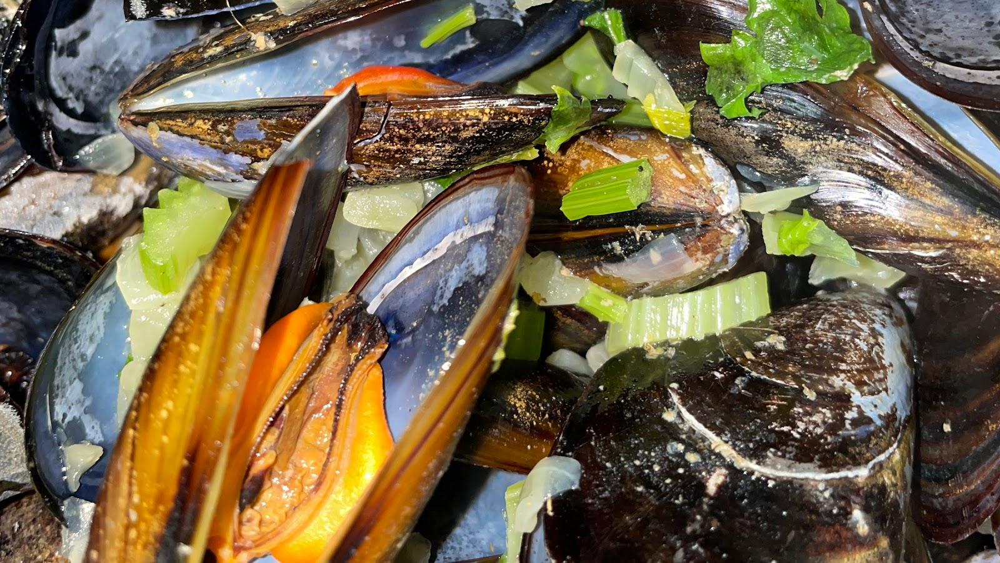

Des del 1969
Bar-Restaurant
Bar-Restaurant
Los Compadres
Cuina mediterrània al cor de L'Escala.

La nostra especialitat
Musclos a la belga
Moules & frites com s'han de fer: musclos al vapor amb api, ceba i julivert, acompanyats de patates fregides. El plat que més ens demanen des de fa dècades.
A la carta
El que no t'has de perdre
Musclos a la belga
Amb patates fregides
Navalles
A la planxa
Sèpia
A la planxa
Paella
Mínim 2 persones
Mandonguilles
Cuina casolana
Tapes
Braves, anxoves i molt més
Horari
Horari de temporada. Consulta Instagram o Google per a canvis.